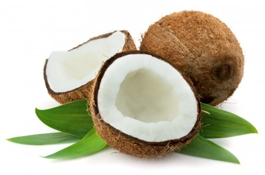
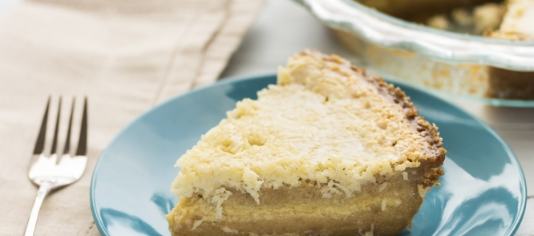

Bereidingstijd: 30-60 MIN.
Ingredienten voor 12 personen
herkomst: geen
de taart is lekker als tussendoortje, als snack of voor een verjaardag.
3 eierdooiers
100 g suiker
1 zakje vanillesuiker
3 druppels rumaroma
3 eiwitten
80 gram bloem
1 mespunt backin
Vulling :
4 eetlepels Malibu, kokoslikeur
1/4 liter slagroom
1 zakje klop-fix
2 zakjes vanillesuiker
2 bananen
sap van 1/2 citroen
Garnering :
50 gram geroosterde gemalen kokos
1 kiwi
banaan
Bereidingswijze
Klop de dooiers met de helft van de suiker,
sla de eiwitten half stijf,
voeg de rest van de suiker toe en klop het eiwit verder stijf.
Leg het eiwit op de dooiers,
strooi daarover de bloem waaronder het backin is gemengd en spatel alles voorzichtig door elkaar.
Schep het deeg in de beboterde springvorm en bak de taart midden in de voorverwarmde oven.
Snijd de afgekoelde taart doormidden en besprenkel de helften met kokoslikeur.
Klop de slagroom met de Dr. Oetker Klop-Fix en de Dr. Oetker Gevanillineerde Suiker stijf.
Pel de bananen en snijd ze in plakjes.
Druppel het citroensap erover en leg de plakjes banaan op de onderste taartbodem.
Verdeel de helft van de slagroom erover, leg de bovenste taarthelft erop en bestrijk de rand en de bovenkant met slagroom.
Druk de geroosterde kokos tegen de rand en bestrooi de bovenkant met de rest.
Garneer de taart met plakjes banaan en kiwi en de rest van de slagroom.

